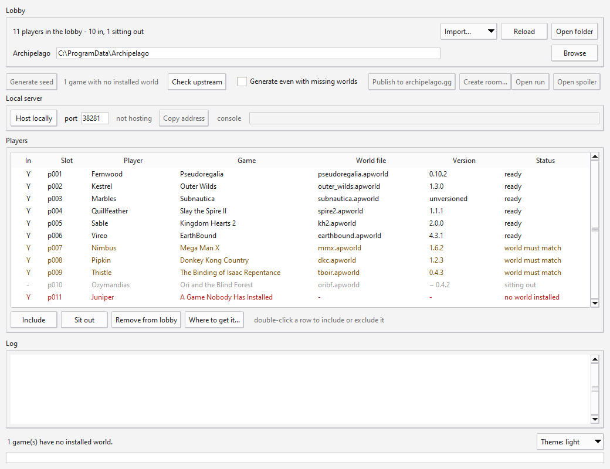
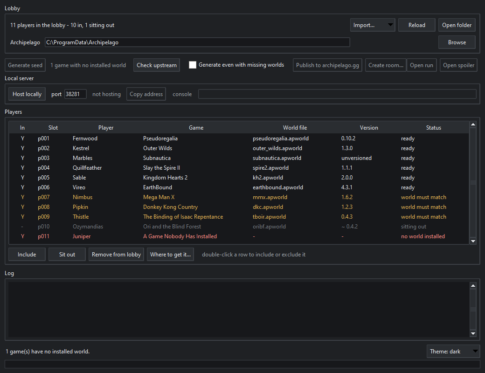

A local-first front end for running Archipelago multiworlds on Windows. The roster lives on your machine, generation never touches the network, and the seed can be hosted right here.


Most tooling around a multiworld treats a remote lobby as the source of truth. Every generation re-scrapes someone else's server, the roster evaporates between runs, and nothing works offline. Here the local lobby owns the roster; a remote room is one way to put configs into it, not the thing that defines it.
Standard library only — no pip install, no virtualenv. If you have Python and an Archipelago install, you have everything.
.yaml files. The
remote room is one importer among several rather than the foundation.
.apworld files
actually installed, so a missing world is something you learn before
generating, not after.
.apworld the generator needs, and the client or mod the player
installs to actually play. Both are tracked as links, with the evidence each
claim was read from, and the games in your lobby are checked first.
Windows, Python 3.10 or newer with tkinter, and an Archipelago install.
git clone https://github.com/vitsorg/APLobbyGen
cd APLobbyGen
python aplobby_gui.pypython aplobby.py import folder path\to\configs add configs to the lobby
python aplobby.py list show the roster
python aplobby.py generate build a seed, no network
python aplobby.py host host it on this machineFive test suites, all offline except the one that deliberately hosts on loopback and connects to itself. They assert rather than print, so a silent pass is a real pass — including one that drives the real window with nobody watching.
python selftest_lobby.py the store: identity, history, crash recovery
python selftest_sources.py the importers, with the network stubbed
python selftest_gui.py drives the real window with nobody watching
python selftest_serve.py really starts a server, really connects to it
python selftest_links.py the upstream pointers and their client statesSource-available rather than open source: run it freely for Archipelago multiworlds and share it unmodified, but changes come back here as pull requests instead of being published as a separate version. Forking to open a PR is explicitly permitted. See the licence for the exact terms.